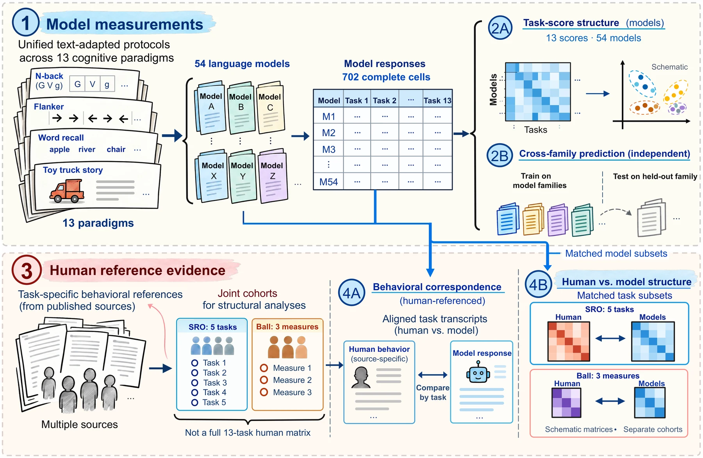

Leaderboard
One key measure per paradigm for 54 open-weight models, next to the published human reference. There is no overall score, and for several measures a higher value is not better.
The highlighted row is the human reference from each paradigm's published source, ranked with the models. Hover over its cells for the source, n and SD. Click a column to sort. Shading shows how far a model is from the human mean in human standard deviations (across people), full at 3 SD, as in Figure 3 of the paper: below human above human. It shows distance, not quality. All rows are the paper's runs, served by Ollama 0.18.0. WAG shows whether a model always placed the same wager, and no human proportion exists for it. Submitted models are in the community table. Data in leaderboard.json.
Overview
Shared effects, different errors
Matching the direction of a human effect does not mean matching the errors behind it. CogBattery evaluates language models on text adaptations of classic paradigms in working memory, cognitive control, episodic memory, social reasoning, and metacognition, and compares each result with the human data published for that paradigm.
- 13paradigms in five groups by origin
- 54open-weight models
- 23model families
- 702complete model and task cells
Same direction, different errors
Like humans, models respond more to n-back lures than to controls, yet they make far more false alarms on ordinary non-targets.
Reporting, not signal
Most models' verbal confidence separates correct from incorrect answers less well than humans' does, and most always choose the same wager, while their token probabilities discriminate about as well as human reports.
Groupings and scale
Model scores share two dimensions, the first tied to scale, yet larger models are not consistently closer to humans. Predefined cognitive groups show no reliable predictive advantage for held-out model families over random groupings of the same size, and alternative groupings add no reliable gain either.
Many families
These patterns span many model families, and several remain among models that pass minimal-performance checks.
CogBattery was first released as CogArena (arXiv 2607.24999). It was renamed to avoid confusion with an unrelated benchmark of the same name.
Benchmark
Tasks
All model responses are text. Memory materials stay visible, and human timing and motor demands are omitted. Human references come from separate published sources, not one common cohort.
Example items
2-back
1:G 2:V 3:g
The answer is MATCH because the current letter matches the one two positions earlier, ignoring case. Earlier letters and answers stay visible.
Stroop, incongruent trial
Word: RED Ink-color label: green
The answer is GREEN. Congruent trials use matching word and color labels.
Results
One key measure per paradigm
The measures follow the key-endpoint table of the paper. Invalid task answers count as wrong. There is no overall score. The paradigms measure different things, and a combined human-likeness score would hide that.
Task correlations in two further human cohorts
Besides SRO and Ball, two public cohorts did several of the tasks. CNP controls did list learning, digit span, and Stroop, and adults in Bradford et al. (2020) did false belief, operation span, and Stroop. Each has one task per paradigm group, so we compare each pair's correlation in humans and in the 54 models. Bradford measures are adjusted for age.
| Cohort | Pair | n | Human r | Model r | Human minus model [95% CI] |
|---|---|---|---|---|---|
| CNP | CVLT and DS | 130 | .21 | .40 | −.20 [−.47, .17] |
| CNP | CVLT and ST | 130 | .22 | .40 | −.17 [−.42, .14] |
| CNP | DS and ST | 130 | .06 | .44 | −.38 [−.61, −.13] |
| Bradford | FB and OS | 252 | .20 | .29 | −.10 [−.39, .22] |
| Bradford | FB and ST | 253 | −.09 | −.12 | .03 [−.36, .44] |
| Bradford | OS and ST | 249 | −.12 | .15 | −.27 [−.49, .04] |
Model correlations exceed human ones in five of six pairs, reliably only for CNP digit span and Stroop. With Stroop interference scores instead of accuracy, no CNP interval excludes zero. Without age adjustment, the Bradford operation span and Stroop interval also excludes zero. Task matches are at task-family level only. Definitions and sensitivity checks are in PAPER_VERSION.md.
Community
Submitted models
Models submitted by other researchers, scored by us. Each submission is replayed through the paper's run loop, every request is checked against the one the submitter sent, and the replies are scored with the paper's scorers. Scores computed elsewhere are not accepted. The paper table above does not change.
No submissions yet. See Submit a model.
Shading, the paradigm buttons and the value switch work as in the leaderboard. The runner backend follows each model name. Results from an OpenAI-compatible server are marked, because its serving differs from the paper's. Data in community.json, submissions in submissions/.
Contribute
Submit a model
You run the battery on your own machine and server. The materials are built from the original sources and checked against the ones the paper used.
- Install the repository and download the sources.
- Build the paper materials. Each task is checked against the paper's material digest.
- Run your model with Ollama, as in the paper, or any OpenAI-compatible server or hosted API. Runs resume after an interruption.
- See your key measures next to the human references and the paper's 54-model means, with no submission needed.
- To join the community table, pack the run into one small file and open a pull request that adds it to
submissions/with the model's family and size. Hosted models whose size is not disclosed are welcome and show "n/d". - A check on the pull request replays your replies through the paper's run loop, checks every request, scores them with the paper's scorers, and shows your key measures. After the merge, your row appears in the community table.
pip install -e ".[paper]"
python -m scripts.release.fetch_sources
python -m scripts.release.build_paper_materials
python -m scripts.release.run_model --materials results/paper_materials/manifest.json \
--model <your-model> --backend ollama --base-url http://localhost:11434
python -m scripts.release.report_model --run results/submissions/<your-model> \
--materials results/paper_materials/manifest.json
python -m scripts.release.pack_submission pack --run results/submissions/<your-model> \
--out submissions/<id>.cogbattery.jsonl.gzStep-by-step guide, the OpenAI-compatible option, and a no-cost smoke test are in REPRODUCING.md. The CVLT-II word lists are read on your machine from a public UCLA codebook and are not stored in the repository. The files a submission needs are listed in submissions/.
To add a new paradigm with published human data, open an issue first and see CONTRIBUTING.md.
Reference
Citation
@article{cogarena2026,
title = {CogBattery: Human-Referenced Evaluation of Cognitive Task Behavior and Structure in Language Models},
journal = {arXiv preprint arXiv:2607.24999},
year = {2026}
}